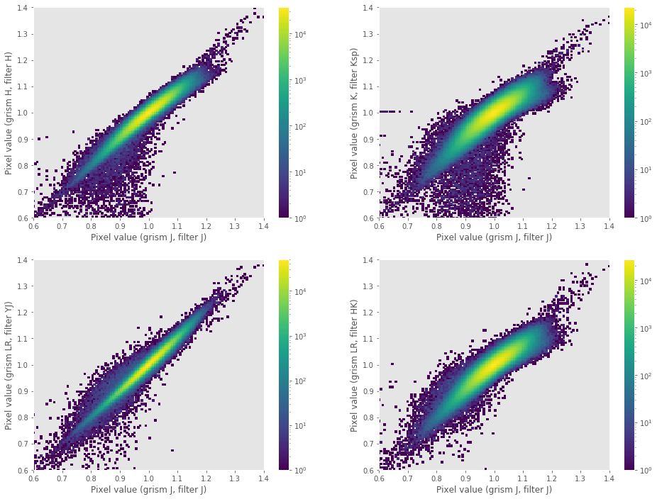

Preliminaries
Warning
All the commands are assumed to be executed in a terminal running the bash shell (or a compatible one).
Don’t forget to activate the same Python environment employed to install
PyEmir. In this document, the prompt (emir) $ will indicate that this
is the case.
Running PyEmir recipes from Numina
The numina script is the interface with GTC pipelines. In order to execute
PyEmir recipes you should use execute something like:
(emir) $ numina run <observation_result_file.yaml> -r <requirements_file.yaml>
where <observation_result_file.yaml> is an observation result in YAML
format, and <requirements_files.yaml> is a reqruirements file, also in YAML
format.
Note: YAML is a human-readable data serialization language (for details, see YAML Syntax desciption)
Initial file tree
Here you can find the initial file structure with basic calibrations, required to start the data reduction with PyEmir, either in imaging or spectroscopic mode.
Download the following file: pyemir_initial_tree_v2a.tgz.
If you find any trouble trying to download the previous file, try with the following command line:
(emir) $ curl -O https://guaix.fis.ucm.es/data/pyemir/pyemir_initial_tree_v2a.tgz
Warning
Please be aware that this file has been updated as of February 2024 to make it easier to handle EMIR data collected with the new H2RG detector. Specifically, the structure of the control.yaml file has been modified to support varying calibrations based on the detector being used. This update is part of an ongoing process as we continue to develop proper calibrations for the H2RG detector. In the meantime, the pipeline should function properly with images captured using the original EMIR detector.
It is advisable to decompress the previous file in a pristine directory where you can comfortably start the reduction of your data:
(emir) $ mkdir newdir
(emir) $ cd newdir
# copy here the downloaded tgz file
(emir) $ tar zxvf pyemir_initial_tree_v2a.tgz
...
...
(emir) $ rm pyemir_initial_tree_v2a.tgz
(emir) $ tree
.
├── control.yaml
└── data
├── master_bpm.fits
├── master_bpm_zeros.fits
├── master_dark_zeros.fits
├── master_flat_ones.fits
├── master_flat_spec.fits
├── master_flat_spec_H2RG.fits
├── rect_wpoly_MOSlibrary_grism_H_filter_H.json
├── rect_wpoly_MOSlibrary_grism_J_filter_J.json
├── rect_wpoly_MOSlibrary_grism_K_filter_Ksp.json
├── rect_wpoly_MOSlibrary_grism_LR_filter_HK.json
└── rect_wpoly_MOSlibrary_grism_LR_filter_YJ.json
The file control.yaml is a requirements file needed to execute
the reduction recipes with numina. In principle you do not need to modify
its contents.
The subdirectory data contains the following calibration files:
master_bpm: master bad-pixel mask (pixels in this image with values different from zero are usually interpolated at the beginning of the execution of the reduction recipes).
master_flat_spec.fits: pixel-to-pixel flatfield, computed from spectroscopic exposures of 2000 lamp ON-OFF tungsten exposures. The small variations of the pixel response with wavelength indicate that for most purposes it can be used with any filter configuration and observing mode (imaging or spectroscopy). The following plots show the flatfield value in around 2 million pixels (common detector region of the flatfield images using distinct grism + filter combinations) deduced from spectroscopy observations using grism J + filter J (X axis) in comparison with the values deduced using grism H + filter H, grism K + filter Ksp, grism LR + filter YJ and grism LR + filter HK (Y axis). Note that the color scale is given in logarithmic units (i.e., most pixels fall in the interval around 1.0 in the 1:1 diagonal line).rect_wpoly_MOSlibrary_grism*.json: empirical distortion and wavelength callibrations for the reduction of spectroscopic data. These calibrations allow an initial rectification and wavelength calibration without the need of auxiliary calibration images (e.g. arc exposures).master_dark_zeros.fits: is a dummy 2048x2048 image of zeros (this image is typically not necessary since in the IR the reduction of science observations usually requires de subtraction of consecutive images).master_flat_ones.fitsis a dummy 2048x2048 image of ones (employed to in the development of the reduction recipes to check the effect of the pixel-to-pixel correction; you can ignore it).
{kind=link}
Installing ds9
Probably you already have ds9 installed in your system. If this is not the case, you can use conda to do it!
(emir) $ conda install ds9
Note that we have activated the emir environment prior to the installation
of the new package. That means that this particular ds9 installation will be
exclusively available from within that environment.
Use of interactive matplotlib plots
The interactive plots created by some Numina and PyEmir scripts have been
tested using the Qt5Agg backend of matplotlib. Note that this will require the
pyqt package to be installed in your environment (see for example the
conda instructions to install pyqt).
If you want to use the same backend (this is not really necessary), check that
the following line appears in the file .matplotlib/matplotlibrc (under your
home directory):
backend: Qt5Agg
If that file does not exist, generate it with the above line.
In most interactive matplotlib plots created by Numina and Pyemir you can press
? over the graphical window to retrieve a quick help concerning the use of
some keystrokes to perform useful plot actions, like zooming, panning, setting
background and foreground levels, etc. Note that some of these actions are
already available in the navigation toolbar that appears at the top of the
graphical windows.